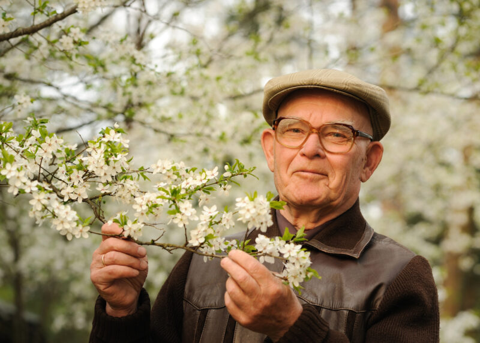

Empowering older adults to live safely and stay socially connected from the comfort of their own homes.

Many older adults wish to maintain their independence by living in their own homes (aging in place). However, concerns about safety, potential isolation, and managing daily health needs can create significant barriers for both seniors and their families. Traditional solutions often lack integration or are difficult for non-tech-savvy individuals to use effectively.
Aging in place, surrounded by familiar comforts, is deeply important for emotional well-being and maintaining a sense of self. Our solution directly supports this by:
Discover how our integrated solution can support independent living. Explore partnership opportunities or inquire about pilot program participation.
Request Information"I never thought I’d feel this independent again. I manage my day, chat with my daughter, and join community events—all from my home." – Margaret, 74
"This solution has given my mother the freedom she deserves—and me, peace of mind." – David, Family Member